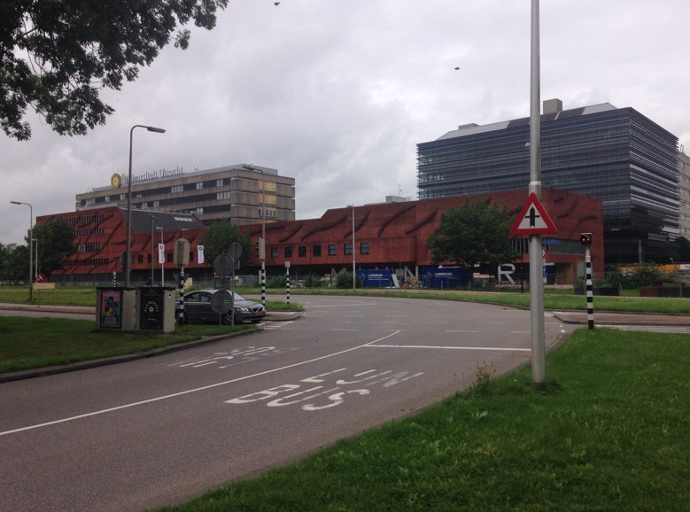

Location
The summer school will be held in the Buys Ballot Gebouw
(Buys Ballot Building) on the Utrecht Science Park, De
Uithof. The lectures will be in room 205; the lab sessions will
be in rooms 106 and 109.
Getting here
When traveling by public transportation from Utrecht Central Station
to the Uithof, you can take either bus 12 to bus stop Padualaan or bus
28/128 to bus stop Botanische Tuinen. At both stops, you should be
able to see the following buildings just beyond the bus stop.

The low red building, the Minnaertgebouw is currently being
renovated. The Buys Ballot Gebouw is just behind the Minnaertgebouw,
with the large
Universiteit Utrecht logo on the roof.
Upon entering the building, take the elevator to the 5th floor. The
coffee room where you can register is immediately adjacent to the
elevators.
Public transport
Although you can pay for your bus tickets on the bus, it might be a
good idea to purchase an OV chipkaart which lets you pay by
swiping your card. Fares are typically a bit cheaper when paid with
a chipkaart as opposed to cash on the bus. You can find more
information
about the OV chipkaart online.